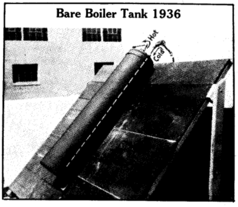

Les Systèmes Solaires Thermiques
Plan
Introduction
Les capteurs solaires thermiques, récupèrent l'énergie du soleil et la transforment en chaleur. Il ne faut pas les confondre avec les panneaux solaires photovoltaïques qui récupèrent aussi l'énergie du soleil, mais pour la convertir en électricité. L'énergie récupérée par les capteurs permet de produire de l'eau chaude sanitaire ou de chauffer une maison, généralement grâce à un plancher solaire direct (PSD).
Plusieurs arguments sont en faveur de l'utilisation des panneaux solaires thermiques :
- il est possible de réaliser un système solaire thermique (SST) efficace avec des matériaux courants et une technologie simple ;
- L'énergie solaire est à la fois abondante, renouvelable, gratuite et sous-utilisée (GIEC, 2012) ;
- Un SST bien réalisé pourra fonctionner plusieurs dizaines d'années.
- La conception du système demande un minimum de réflexion pour éviter les surchauffes d'été et donc la détérioration prématurée du système;
- Dans la grande majorité des cas, les SST doivent être couplés à un chauffage d'appoint classique (électricité, fioul, gaz, bois..) pour répondre aux besoins hivernaux;
Le principe
Le rayonnement du soleil est converti en chaleur par un capteur de couleur sombre. Celui-ci transmet cette chaleur à un fluide caloporteur qui, à son tour, la transmet à de l'eau sanitaire pour la chauffer. C'est un principe simple et facile à mettre en oeuvre : il suffit de laisser au soleil un fût peint en noir et rempli d'eau pour constater que la température de l'eau qu'il contient augmente. Les premières expériences en université sur ce type de système datent de la fin des années 1930.
-

- 
À gauche, réclame pour le premier capteur solaire commercial (1891); à droite, un expérience de F.A. Brooks au centre d'expérience agricole de l'université de Californie (1936). Source : Bainbridge (1981).
Les composants principaux
Le capteur
C'est un caisson isolé avec une face vitrée pour laisser passer le rayonnement solaire. Dans ce caisson se trouve un absorbeur metallique peint d'une couleur sombre. Ainsi, l'absorbeur est chauffé par le rayonnement solaire et la chaleur produite se trouve piégée et s'accumule dans le caisson : c'est l'effet de serre (Wood, 1909).
Les circuits primaire et secondaire
Cette chaleur accumulée est transmise à un fluide caloporteur, c'est-à-dire un fluide qui permet de transporter l'énergie, qui circule dans une série de tubes appelée le circuit primaire. Celui-ci permet d'amener la chaleur jusqu'à un système de stockage permettant de produire de l'eau chaude sanitaire (avec un cumulus, par exemple) ou du chauffage (des radiateurs muraux ou un plancher chauffant, par exemple).
Si la chaleur produite sert à chauffer de l'eau chaude sanitaire (dans le circuit secondaire), alors le fluide caloporteur est en est séparé (il reste dans le circuit primaire). En effet, sous les climats tempérés, on répond au risque de gel en ajoutant un liquide antigel dans le circuit primaire : du mono-propylène-glycol, comme dans le circuit de refroidissement des voitures.
Le stockage
l'énergie solaire est une ressource intermittente : elle dépend de la météo, de l'heure du jour et de la saison. Il faut donc pouvoir accumuler cette énergie pour l'utiliser plus tard. C'est le rôle des composants de stockage : les cumulus et les PSD.


À gauche, schéma d'un SST classique; à droite, schéma d'un capteur plan. Source : GIEC (2012 p. 337).
Références
- GIEC, 2012, p. 337. Renewable Energy Sources and Climate Change Mitigation: Special Report of the IPCC. Disponible ici. "Solar energy is the most abundant of all energy resources. Indeed, the rate at which solar energy is intercepted by the Earth is about 10,000 times greater than the rate at which humankind consumes energy."
- David A. Bainbridge, 1981. The Integral Passive Solar Water Heater Book.
- R.W. Wood, 1909. Note on the Theory of the Greenhouse. Disponible ici.